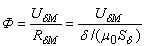

Заданы геометрические размеры магнитопровода: lм, δ, S1 ≈ Sδ и кривые намагничивания ферромагнетиков отдельных участков цепи (см. рис. 5.15а и рис. 5.15б), а также МДС F обмотки. Нужно определить магнитный поток Ф в зазоре. Запишем закон полного тока:
H1lм + Hδδ = F = RмэФ = wI.
Откуда искомый магнитный поток
,
(5.14)
Полученное нелинейное относительно магнитного потока Ф уравнение обычно решают на ЭВМ, выражая зависимость µ(Ф) в аналитической или табличной форме. Приближенное решение можно получит посредством графо-аналитических методов.
Метод последовательного приближения В первом приближении примем магнитное сопротивление цепи Rмэ, равное магнитному сопротивлению воздушного зазора, т.е.
Rмэ ≈ Rδм = δ / (µ0Sδ) = 8·105δ / Sδ.
При этом условии возбуждаемый известной МДС F магнитный поток Ф0 в магнитопроводе заведомо больше действительного, т. е. Ф0 = F / Rδм > Ф.
Примем Ф1 = 0,7Ф0 и определим по методике прямой задачи величину F1, затем примем Ф2 = 0,8Ф0 и определим F2. Если F2 < F, то примем Ф3 > Ф2, например, Ф3 ≈ 0,9Ф0 и определим F3, и т. д. (до 5…6 значений потока Ф). Строим вебер-амперную характеристику Ф(F) цепи (рис. 5.16) и, проведя вертикальную линию с точки F (заданной МДС) до пересечения с кривой Ф = ƒ(F), а затем горизонтальную линию с этой точки до оси ординат, находим на оси ординат искомый магнитный поток Ф.
Графический метод. Вычерчиваем схему замещения исследуемой цепи (см. рис. 5.17а) с выделением участка с линейным магнитным сопротивлением Rδм и участка с нелинейным сопротивлением R1м (рис. 5.19а). МДС схемы замещения
F = ФRδм + ФR1м = Uδм + U1м,
откуда – линейная зависимость Ф = ƒ(Uδм);  – нелинейная зависимость Ф
= ƒ(U1м).
– нелинейная зависимость Ф
= ƒ(U1м).
Строим на одном рисунке (в выбранном масштабе) три графика (рис. 5.19б): Ф(Uδм) для воздушного зазора – прямую линию, угол наклона к оси абсцисс которой пропорционален сопротивлению Rδм; Ф(U1м) для магнитной цепи без воздушного зазора – кривую, подобную графику B(H) материала, так как поток Ф = BSм пропорционален индукции В, а магнитное напряжение Uм = Hlм – напряжённости H, и график Ф(Uм), откладывая от оси ординат по горизонталям отрезки, равные суммарной длине отрезков кривой Ф(U1м) и прямой Ф(Uδм).
Затем из точки F = Uм восстанавливаем перпендикуляр до пересечения с пунктирной кривой Ф(Uм) и на оси ординат находим искомый магнитный поток Ф.
На практике поступают проще. Анализ выражения магнитного потока Ф = (F – U1м)/Rδм показывает, что U1м = F при Ф = 0 и U1м = 0 при Ф = F / Rδм = Ф0 (рис. 5.19в). Прямая, соединяющая две точки Ф0 и F, пересекает кривую Ф(U1м) в точке а, горизонталь через которую дает на оси ординат искомый магнитный поток Ф, а вертикаль позволяет определить на оси абсцисс магнитные напряжения U1м и Uδм.